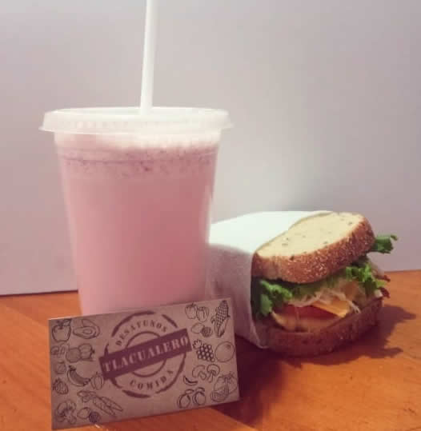

|
 |
Pollo asado, acompañado de vegetales al vapor. |
Desayuno: Licuado y sandwich de pollo asado. |
.jpeg) |
.jpeg) |
Tostadas de atún. |
Preparación de torta cubana. |
.jpeg) |
 |
Orden de tacos de longaniza y bistec. |
Baguettes. Envueltos y listos para su venta. |
 |
 |
Pechuga de pollo al vapor, acompañada de crema de brocoli con chile morron. |
Así es cómo luce una torta cubana. ¡Deliciosa! |